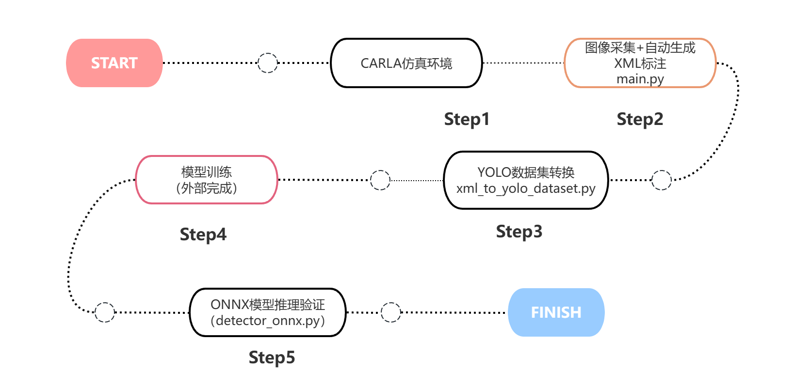
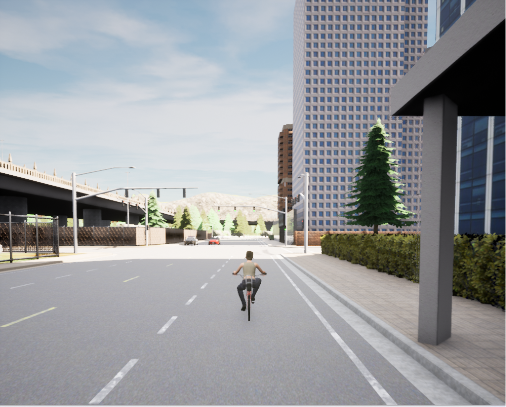
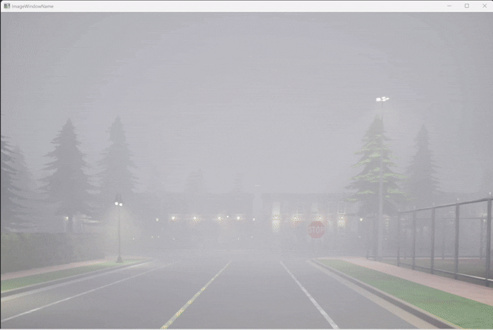
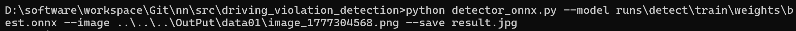

基于 CARLA 的交通标志检测项目说明与优化设计
1. 项目概述
1.1 项目简介
本项目基于 CARLA 仿真平台，构建了一个面向交通标志检测任务的数据闭环系统，实现了从仿真数据采集、自动标注、数据集构建到模型推理验证的完整流程。
项目来源于开源项目：zaidi007/simulator-generated-data-for-enhanced-model-training部分的交通标志采集部分，本项目对该模块进行优化和功能扩充。
项目核心目标是：在低成本、可控环境下，自动生成高质量目标检测数据，并完成部署级验证。
1.2 项目整体流程

1.2 项目组成
| 模块 | 脚本 | 功能 |
|---|---|---|
| 数据采集模块 | main.py | 仿真采集 + 自动标注 |
| 数据处理模块 | xml_to_yolo_dataset.py | 数据格式转换 |
| 推理验证模块 | detector_onnx.py | ONNX模型推理 |
本项目的核心价值在于：形成完整数据闭环，而非单一功能脚本
2. 项目背景与问题定义
2.1 背景
交通标志检测是智能驾驶感知系统中的基础任务。无论是违规行为识别、行车辅助，还是自动驾驶决策，系统都需要先具备稳定的环境感知能力，而交通标志识别正是其中的重要组成部分。
2.2 问题切入点
传统的数据构建方式通常面临几个明显问题：
- 真实道路采集成本高，数据回收周期长。
- 标注工作量大，尤其是检测框标注耗时明显。
- 天气、光照、道路流量等变量难以系统控制。
- 某些场景难以重复复现，不利于持续迭代算法。
基于这些问题，本项目选择使用 CARLA 仿真平台作为数据源，通过程序自动生成交通标志检测数据，再进一步转换为 YOLO 训练格式，并通过 ONNX 推理脚本完成部署侧验证。
另外，在复现原仓库代码时，发现在采集数据时，车辆会因为前车阻碍而停止，就此阻塞，故尝试对交通标志数据采集部分进行逻辑优化。

2.3 项目目标
本次课程设计主要完成两部分内容：
- 针对开源项目zaidi007/simulator-generated-data-for-enhanced-model-training部分的交通标志采集部分进行逻辑优化。
- 完成交通标志的识别功能。
3.核心技术栈与理论基础
本项目的技术栈比较清晰，可以分为仿真层、数据层、模型层和部署层四部分。
3.1 核心技术栈
| 技术 / 工具 | 用途 |
|---|---|
| Python 3.7 | 项目核心开发语言，负责仿真控制、数据处理与推理脚本编写 |
| CARLA 0.9.11 | 自动驾驶仿真平台，用于构建交通场景、生成交通标志真值信息和采集图像 |
| OpenCV 4.x | 图像读取、检测框绘制、窗口显示、视频读写与 ONNX 推理接口 |
| NumPy 2.2.6 | 图像矩阵处理、投影计算、数值运算与检测输出解析 |
| Pygame | 键盘事件处理与交互控制，支持仿真过程中的输入扩展 |
| XML/Pascal VOC标注 | 保存交通标志检测框、图像尺寸和环境标签等结构化标注信息 |
| YOLO 数据格式 | 训练阶段使用的目标检测标签格式，便于接入 YOLO 系列模型训练 |
| ONNX 1.21.0 | 训练后模型的统一部署格式，用于跨框架推理与工程集成 |
上表概括了本项目最核心的开发与运行基础。围绕这些技术，项目进一步形成了“仿真采集、数据转换、模型推理验证”三段式工程流程。
3.2 仿真层：CARLA
CARLA 是一个面向自动驾驶研究的开源仿真平台，支持：
- 地图与道路网络仿真。
- 车辆、行人、交通灯、交通标志等 Actor 管理。
- RGB 相机等传感器建模。
- Python API 脚本控制。
- 同步模式和 Traffic Manager。
在本项目中，CARLA 主要承担三个作用：
- 提供可控的道路交通环境。
- 提供交通标志的三维几何信息。
- 提供多天气、多交通流条件下的数据采集能力。
3.3 数据层：XML 标注与 YOLO 数据格式
main.py 生成的是接近 Pascal VOC 风格的 XML 标注，其中包含：
- 图像名
- 图像尺寸
- 目标类别
- 边界框坐标
- 天气标签
xml_to_yolo_dataset.py 中再将 VOC 风格边界框转换成 YOLO 所需的归一化格式：
class_id x_center y_center width height
转换公式如下：
x_center = ((xmin + xmax) / 2.0) / width
y_center = ((ymin + ymax) / 2.0) / height
box_width = (xmax - xmin) / width
box_height = (ymax - ymin) / height
这里的理论基础是目标检测任务中最常用的矩形框表示与归一化编码方式，便于神经网络在不同尺寸图像上学习目标位置。
3.4 模型层：YOLO 检测思想
虽然当前仓库里没有训练脚本，但从 xml_to_yolo_dataset.py 和 detector_onnx.py 可以看出项目的模型路线是 YOLO 系列检测器。
YOLO 的核心思想是：
- 将目标检测视为单阶段回归问题。
- 直接预测目标类别和边界框。
- 以较高速度完成端到端检测。
在 detector_onnx.py 中，ONNX 推理流程包括：
- 图像缩放与填充
letterbox blobFromImage预处理- ONNX 前向推理
- 置信度过滤
- NMS 去重
- 可视化绘制
3.5 几何投影理论：3D 到 2D 映射
main.py 的关键优势在于它并不是人工标框，而是根据 CARLA 场景的三维几何信息投影生成二维框。
这里用到了典型的计算机视觉几何流程：
- 获取交通标志在世界坐标中的顶点。
- 通过世界到相机坐标变换矩阵完成坐标系转换。
- 通过相机内参矩阵完成透视投影。
- 取投影点的外接矩形作为 2D 检测框。
核心代码：
- 相机内参构建
- 点投影函数
- 交通标志框提取
4.系统优化设计
这一部分结合三个模块的代码，重点说明项目中已经完成的优化，以及这些优化是如何落到代码里的。
4.1 优化一：引入同步模式，提升采集稳定性
在 CARLA 采集任务中，如果采用异步模式，传感器帧、车辆状态和场景状态之间可能出现错位。项目通过同步模式和固定时间步长提升采集一致性：
settings = world.get_settings()
settings.synchronous_mode = True
settings.fixed_delta_seconds = 0.05
world.apply_settings(settings)
traffic_manager = client.get_trafficmanager(8000)
traffic_manager.set_synchronous_mode(True)
优化作用：
- 让
world.tick()成为统一调度节拍。 - 保证传感器数据和世界状态更一致。
- 更适合高质量数据采集与可重复实验。
4.2 优化二：引入背景交通流，提升场景真实性
为了更加贴近真实场景，项目不是只生成一辆主车，而是先刷出 10 辆背景车，并统一开启自动驾驶：
num_vehicles = 10
vehicles = spawn_vehicles(num_vehicles, world, spawn_points)
for v in vehicles:
v.set_autopilot(True, traffic_manager.get_port())
优化作用：
- 避免采集场景过于理想化。
- 让标志被遮挡、邻车干扰等情况更接近真实道路。
- 为后续鲁棒性训练提供更复杂背景。
4.3 优化三：通过几何约束筛选目标，减少无效标注
这是比较关键的一部分优化，
在 get_signs_bounding_boxes(...) 中，交通标志不会被无差别采集，而是经过多层筛选：
- 距离阈值过滤。
- 只保留车辆右侧目标。
- 只保留相机前方目标。
- 只保留完整落在图像中的目标框。
- 过滤面积过小的框。
- 过滤异常长宽比的框。
核心实现片段如下：
if distance < DISTANCE_THRESHOLD:
right_side_dot_product = dot_product(vehicle_right_vector, vector_to_object)
if right_side_dot_product > 0:
vector_to_camera = obj.location - camera_location
camera_dot_product = dot_product(camera_transform.get_forward_vector(), vector_to_camera)
if camera_dot_product > 0 and sign_location_tuple not in captured_sign_locations:
verts = [v for v in obj.get_world_vertices(carla.Transform())]
x_coords = [get_image_point(v, K, world_2_camera)[0] for v in verts]
y_coords = [get_image_point(v, K, world_2_camera)[1] for v in verts]
xmin, xmax = int(min(x_coords)), int(max(x_coords))
ymin, ymax = int(min(y_coords)), int(max(y_coords))
优化作用：
- 明显减少误标与无效样本。
- 保证标志框更接近实际可见目标。
- 为后续模型训练提供更干净的数据基础。
4.4 优化四：增加重复采集控制，提升数据多样性
你在 main.py 中通过 captured_sign_locations 和 capture_cooldown 控制同一交通标志不会被高频重复采集：
captured_sign_locations = set()
last_capture_time = 0
capture_cooldown = 5
并在标志被成功识别后记录位置：
current_time = time.time()
if current_time - last_capture_time > capture_cooldown:
captured_sign_locations.add(sign_location_tuple)
last_capture_time = current_time
优化作用：
- 降低重复样本比例。
- 避免数据集中某些固定位置标志占比过高。
- 提高样本分布均衡性。
4.5 优化五：加入 NMS，抑制重复框
在投影过程中，一个交通标志可能形成冗余框，因此项目在采集端就进行了非极大值抑制：
def non_maximum_suppression(bboxes, iou_threshold=0.2):
if len(bboxes) == 0:
return []
bboxes = sorted(
bboxes,
key=lambda x: (x['xmax'] - x['xmin']) * (x['ymax'] - x['ymin']),
reverse=True
)
final_bboxes = []
while bboxes:
current_box = bboxes.pop(0)
final_bboxes.append(current_box)
bboxes = [box for box in bboxes if compute_iou(current_box, box) < iou_threshold]
return final_bboxes
优化作用：
- 控制重复标注。
- 提升标注质量。
- 减少后续训练时一个目标对应多个框的问题。
4.6 优化六：加入多天气调度，扩展数据分布
项目已经实现了多天气自动切换，这也是比较有价值的一项优化。
代码中定义了四种天气状态：
weather_conditions = [
'rainy',
'sunny',
'night',
'foggy'
]
并在主循环中按固定间隔切换：
if current_time - last_weather_change_time >= weather_transition_interval:
current_condition = weather_conditions[current_condition_index]
update_weather(world, current_condition)
current_condition_index = (current_condition_index + 1) % len(weather_conditions)
last_weather_change_time = current_time
优化作用：
- 提高数据集的天气多样性。
- 改善模型对雨天、夜间和雾天场景的适应能力。
- 为后续做环境标签分析提供基础。
4.7 优化七：把 XML 标注自动转换为 YOLO 数据集
这一步是项目从“数据采集脚本”走向“训练工程”的关键优化。
xml_to_yolo_dataset.py 自动完成以下工作：
- 匹配 XML 与图像文件。
- 解析 XML 中的尺寸和目标框。
- 把 VOC 框转换成 YOLO 标签。
- 划分
train/val。 - 复制图像与写入标签。
- 自动生成
dataset.yaml。
标签转换核心代码如下：
for class_name, box in labels:
class_id = class_to_id[class_name]
x_center, y_center, box_width, box_height = voc_box_to_yolo((width, height), box)
lines.append(
f"{class_id} {x_center:.6f} {y_center:.6f} {box_width:.6f} {box_height:.6f}"
)
同时它还加入了随机种子和比例切分：
random.seed(args.seed)
random.shuffle(dataset_items)
split_index = int(len(dataset_items) * args.train_ratio)
优化作用：
- 打通采集与训练之间的数据格式障碍。
- 保证训练/验证切分可复现。
- 降低人工整理数据集的工作量。
4.8 优化八：部署端加入 ONNX 推理适配与可视化
detector_onnx.py 体现了另外一层优化，即从训练模型走向轻量部署验证。
它并不是简单读取模型，而是把推理所需的关键步骤都补齐了。
1）Letterbox 预处理
为了保证输入保持宽高比，同时适配网络固定尺寸，代码加入了 letterbox：
scale = min(self.input_size / w, self.input_size / h)
new_w, new_h = int(round(w * scale)), int(round(h * scale))
canvas = np.full((self.input_size, self.input_size, 3), 114, dtype=np.uint8)
对应代码：detector_onnx.py:37-49
2）兼容不同 ONNX 输出布局
这一点是很实用的工程优化。
Ultralytics 导出的 ONNX 输出可能是 [num_preds, 4+num_classes]，也可能是 [4+num_classes, num_preds]，代码对这两种形式做了兼容：
preds = np.squeeze(outputs)
if preds.ndim != 2:
raise ValueError(f"Unexpected ONNX output shape: {outputs.shape}")
if preds.shape[0] < preds.shape[1] and preds.shape[0] <= 128:
preds = preds.T
3）推理后处理与 NMS
indices = cv2.dnn.NMSBoxes(
boxes,
confidences,
self.conf_threshold,
self.iou_threshold
)
4）图像和视频双模式验证
项目支持：
--image单图检测--video视频或摄像头检测
优化作用：
- 让模型可以快速在本地完成部署级验证。
- 便于直观观察模型检测框、置信度和实时表现。
- 形成“采集-训练-推理”的闭环验证路径。
5. 系统运行效果
5.1 运行环境
| 环境类别 | 配置 |
|---|---|
| 操作系统 | Windows 11 |
| 数据采集环境 | Python 3.7，CARLA 0.9.11，OpenCV，NumPy，Pygame |
| 模型训练环境 | Python 3.13，Ultralytics 8.4.41，PyTorch 2.11.0+cpu |
| 模型部署环境 | ONNX 1.21.0，ONNX Runtime 1.25.0，OpenCV DNN |
| 硬件 | AMD Ryzen 7 8845H CPU |
5.2 运行方式
1）启动 CARLA 并运行数据采集脚本
先启动 CARLA 0.9.11 模拟器，再进入项目目录运行：
#启动Carla模拟器
CarlaUE4.exe
#运行交通标志数据采集主程序
python main.py
#将 XML 标注转换为 YOLO 数据集
python .\xml_to_yolo_dataset.py --input ..\..\..\OutPut\data01 --output ..\..\..\nn\src\driving_violation_detection\dataset
#训练 YOLO 模型
yolo detect train model=yolo11n.pt data=..\..\..\nn\src\driving_violation_detection\dataset\dataset.yaml epochs=50 imgsz=640 batch=8 device=cpu workers=0
#导出ONNX模型
yolo export model=..\..\..\nn\src\driving_violation_detection\runs\detect\train\weights\best.pt format=onnx imgsz=640
#运行 ONNX 推理脚本
python .\detector_onnx.py --model ..\..\..\nn\src\driving_violation_detection\runs\detect\train\weights\best.onnx --image ..\..\..\OutPut\data01\image_xxx.png --save ..\..\..\nn\src\driving_violation_detection\onnx_result.jpg
5.3 运行效果展示
交通标志采集演示：

交通标志进行检测：

5.4 当前系统效果的客观评价
从工程能力上讲，这个项目已经具备以下成果：
- 能自动采集交通标志样本。
- 能自动生成标注。
- 能自动转换为 YOLO 数据集。
- 能对导出的 ONNX 模型进行推理验证。
6. 功能扩展与未来规划
虽然当前项目已经形成闭环，但仍然有比较明确的扩展方向：
- 从单类别扩展到多类别感知：当前项目主要围绕
TrafficSign一个类别展开。后续可以扩展到交通灯、车辆、行人、车道线、停车线。 - 从离线采集扩展到在线检测闭环：在 CARLA 采集过程中直接调用 ONNX 模型实时检测。
- 对交通标志进行细分：对于不同种类的交通标志进行不同处理，可以接入交通违规行为检测相关方向。
- 进一步优化数据筛选策略：当前已经做了距离、方向、面积和宽高比过滤，后续还可以加入遮挡率过滤、模糊度过滤等，进一步提升训练集质量。
7. 总结
目前主要完成了以下几个优化工作：
- 对于交通标志采集部分，完善采集过程，设置自动驾驶、避免僵尸车辆阻塞、控制车速。
- 优化交通标志采集细节，避免采集对向标志，确保采集到完整标志，对采集到的交通标志进行去重处理。
- 通过多天气调度扩展数据分布。
- 通过数据集转换打通训练流程、ONNX推理验证打通部署流程。
后续将进一步完善：
- 切换不同地图，增加交通标志采集量。
- 增加训练与评估脚本，补全完整实验闭环。
- 扩展类别与场景随机化能力，提升泛化性。